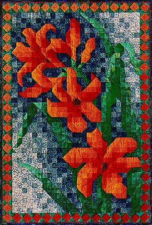

Lily MosaicLily Mosaic
Lily MosaicLily Mosaic
| #P110..........$7.95 31" X 45" I used to wonder why my quilts didn't always look like the one pictured as an example. I would check and recheck. Yes, I had followed the directions correctly. But the one pictured still wasn't quite the same. Was it a mistake in the directions or the quilt? In my patterns, the mistake is in the quilt. I don't do this on purpose. I do try to make sure the photographed quilt is as close as possible to the directions. But if it's not a glaring mistake and I have to search for it, I leave it in. When you make one of these quilts, I suggest you do the same. It makes life a lot easier when you just have fun and don't try to be perfect all the time. The Lily Mosaic is the quilt I like to show as an example of a mistake. One of the half square triangles got turned and I didn't discover it until the quilt was almost done. People can't find it unless I point it out. Remember each quilt has a mind of it's own. This is the way the quilt expresses it's own unique personality. Capture the fleeting beauty of a day lily with this wall quilt. It's blooms won't fade after one day. |
 Copyright 1995, Jane L. Kakaley |